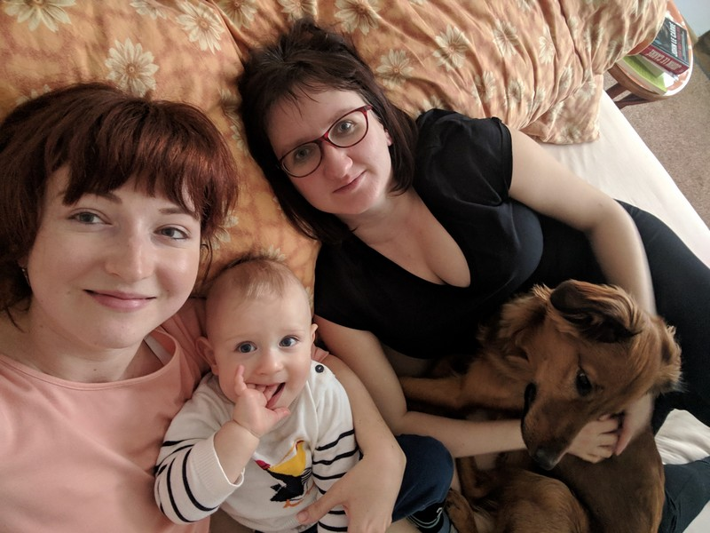
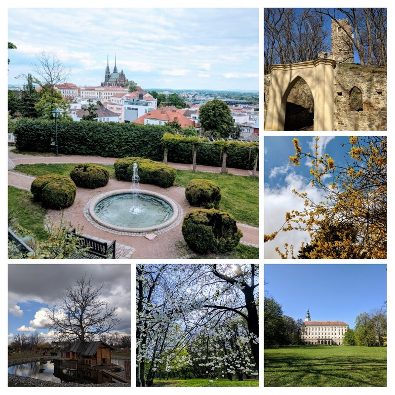
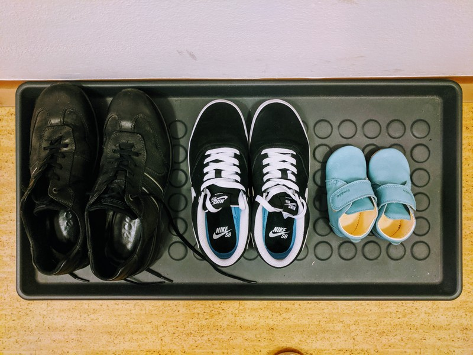
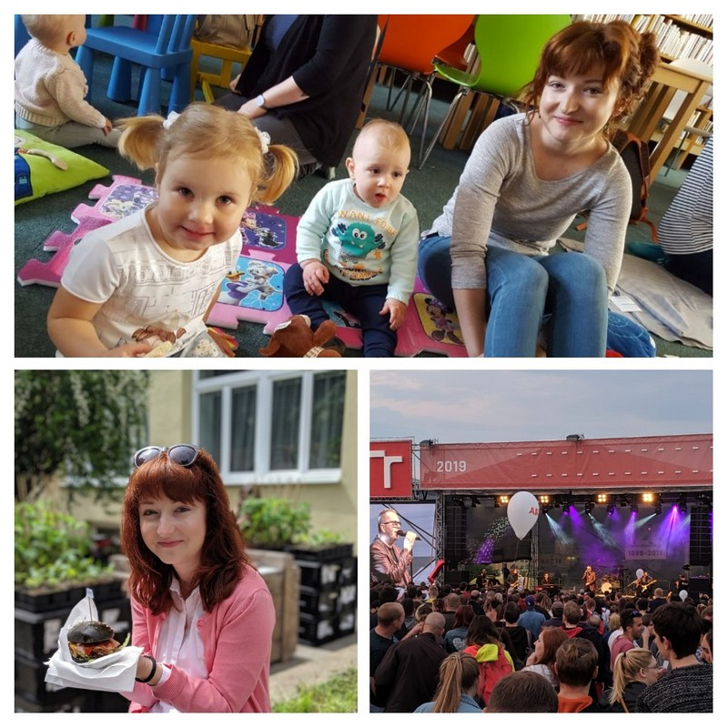

Je to sice fráze, ale stejně nemůžu uvěřit tomu, jak rychle ten čas letí. Ještě včera jsem Olího poprvé držela v náručí a najednou už je mu rok a půl! Je asi jasné, že tohle jaro patřilo především oslavě jeho prvních narozenin. Ale podnikali jsme i spoustu dalších skvělých akcí.
Moc ráda vzpomínám na naši březnovou návštěvu u Terezky v Košířích. Zašly jsme si na oběd, který Olí celý prospal (zázrak!), udělaly si procházku po Cibulce a pak se už jen válely.

My dvě, děti a pes <3
A ano, jarní procházky! Na ty jsem se těšila snad už od prvních zimních plískanic. Každý den naše zamilované trasy, každý den rozněžňování nad vším, co už rozkvetlo. Jaro já prostě miluju…

Naše jarní procházky
Dalším obrovským milníkem se pro nás staly Velikonoce, kdy Olí začal chodit. Asi máloco dojme mámu víc, než chvíle, kdy se ve vaší předsíni vedle velkých dospěláckých bot objeví jedny úplně mrňavoučké a vy si uvědomíte, že to dítě je zase o kus samostatnější.

Malý krok pro lidstvo, velký krok pro O.
S Olím se toho taky dalo podnikat zase o něco víc. Navštívili jsme tak spolu třeba poprvé program v dětské knihovně (byť ten jsme přežili jen díky přítomnosti dostatečného množství jídla), koncert Richarda Müllera na Palačáku v rámci výročních oslav VUT (překvapivě pohodová akce, kde s námi Olí vydržel až do pozdních nočních hodin) nebo třeba Street Food Festival za Lužánkami (odkud jsme odcházeli za Olího mohutného řevu poté, co spadl čelem na obrubník :-/…)

Potrava pro tělo, duši i uši :))
Jaro zkrátka přineslo spoustu zážitků a my už se nemohli dočkat, až na ně navážeme několika očekávanými letními akcemi. O těch ovšem až příště ;-)